Earlier chapters each gave one technique (evaluation, prompting, RAG, agents, finetuning, data, inference). This chapter shows how they fit into one production system. Huyen starts with the smallest possible app (user → model API → user) and adds one component at a time, each to fix a real problem: context construction so the model has the facts, input and output guardrails so you do not leak data or ship bad answers, a router and model gateway to use many models safely and cheaply, exact and semantic caches to cut latency and cost, and agent patterns and write actions for loops and real-world actions. Every component adds failure modes, so the system needs monitoring and observability (metrics, logs, traces, drift detection) and an orchestrator to chain the parts. The second half is about user feedback: in a chat interface users give feedback in their own words and actions (stopping a reply, rephrasing, editing, regenerating), which you can extract for evaluation, development and personalisation, if you design when and how to collect it and respect its biases and its degenerate feedback loops.
Read the rows top to bottom. Each row is a problem the previous row created; the orange box is the idea the next row reacts to.
There is no single "AI app architecture" you copy. There is a default path (context → guardrails → router/gateway → cache → agent logic) where each box is added only when a real problem demands it, and every box you add also adds a new way to fail. That is why observability and user feedback sit next to the architecture in the same chapter: you build, you watch, users tell you what is wrong, you improve.
Chapters 2 to 9 each taught one way to adapt a foundation model to an application: evaluation, prompting, RAG and agents, finetuning, dataset engineering, inference optimisation. This chapter asks the next question: how do you combine these techniques into a product that succeeds?
There are so many techniques and tools that choosing can feel overwhelming. So Huyen takes a gradual approach: start from the simplest possible architecture for a foundation-model app, look at what goes wrong with it, and add components one at a time to fix those problems.
The second theme is user feedback. You can reason forever about how to build a good app, but the only real test is putting it in front of users. Feedback has always guided product development. For AI apps it matters even more, because it is also a data source for improving the models. The chat interface is a double-edged sword here: it makes it easier for users to give feedback (they just talk), but harder for developers to pull a clean signal out of that talk. The chapter covers the different kinds of conversational feedback and how to design a system that collects the right feedback without hurting the user experience.
Opening a restaurant. On day one you have one cook and one counter. Then you add a pantry (context), a food-safety checker at the door and the pass (guardrails), a head waiter who sends each order to the right station (router), a single supplier desk that deals with all vendors (gateway), a warmer with ready plates of the most common dishes (cache), and finally staff who can place orders with suppliers on their own (write actions). And all along, you watch the customers' faces and listen to what they say (feedback).
Where it breaks: a restaurant's customers rarely change the cook's "weights"; in AI apps, feedback can literally become training data for the next model.
Each component exists to answer one failure of the simpler system: missing information, data leaks, wrong or unsafe outputs, too many vendors, too much cost and latency, too little capability. That is why the chapter reads like a story rather than a catalogue: you can always ask "what problem does this box solve?" If you cannot answer, you probably do not need the box yet.
"Design an LLM-powered assistant for our product." A strong answer follows this chapter's order: "I would ship the simplest call path first, then add retrieval for context, input/output guardrails, a router and a gateway once we have several models, a cache once traffic repeats, and agent loops or write actions last. Observability and a feedback loop are built in from day one." This shows you add complexity only for a reason.
A full AI architecture can be complex. Huyen follows the path a team usually takes in production: start simple, then add components. AI apps differ a lot, but they share many common parts. The architecture in this chapter has been validated at multiple companies as general enough for a wide range of applications, though some apps will deviate from it.
In its simplest form, the app receives a query, sends it to the model, and returns the model's response to the user. Nothing else: no context augmentation, no guardrails, no optimisation. The "Model API" box means both third-party APIs (OpenAI, Google, Anthropic, ...) and self-hosted models; building an inference server for self-hosted models was Chapter 9's topic.
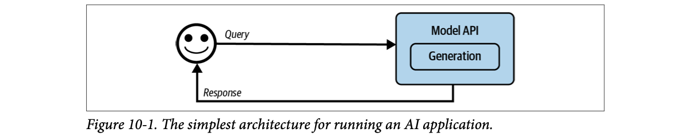
How to read this figure. One user, one arrow out ("Query"), one box ("Model API" with a "Generation" step inside), one arrow back ("Response"). Every later figure in this chapter is this picture with boxes added; keep it in mind as the baseline.
From here, you add components as needs arise. A typical progression:
This is the order Huyen commonly sees in production, but everyone's needs differ; follow the order that makes sense for your app. Monitoring and observability (needed for quality control and improvement) are covered after the five steps, and orchestration (chaining the components together) after that.
This step-through is my own simplified redraw of Figures 10-1 to 10-10 so you can watch the system grow; the book's own figures appear one by one in the plates below.
A new kirana shop. Day one: you stand at the counter and answer from memory (simplest app). Then you add a ledger and a phone to call the wholesaler (context), a rule never to read customers' card numbers aloud (guardrail), a helper who sends big orders to the wholesaler and small ones to the shelf (router), one account with the distributor instead of ten (gateway), a basket of pre-packed 1 kg sugar bags (cache), and finally a boy who can deliver and collect cash on his own (write actions).
Where it breaks: shop growth is mostly driven by customer volume; AI architecture growth is driven as much by quality and safety problems as by load.
The model call is the expensive, slow, non-deterministic part. Every component around it either improves the input (context, input guardrails, routing), checks the output (scoring, output guardrails), avoids the call (cache), or repeats/extends the call (agent loops, write actions). Thinking in those four groups makes any new tool easy to place.
"Walk me through a production LLM request path." Say: "Query → (cache check) → context construction with retrieval and read-only tools → input guardrails like PII redaction → gateway, which routes to a model and handles keys and fallbacks → generation and scoring → output guardrails → response, which is also cached and logged. Agentic apps loop the response back for more retrieval, and write actions go behind extra checks." Draw it as you speak; interviewers love the incremental story.
Inference servers for self-hosted models: Ch.9. Each step is detailed in plates 03–11. A concrete deployed version of a similar pipeline: LLM Engineer's Handbook Ch.10.
The first expansion of a platform is usually a way for the system to construct the relevant context the model needs to answer each query. As Chapter 6 showed, context can come from different retrieval mechanisms: text retrieval, image retrieval, and tabular data retrieval. It can also come from tools that let the model gather information automatically through APIs: web search, news, weather, events, and so on.
Huyen's key comparison: context construction is like feature engineering for foundation models. In classic ML you hand-craft the input features; here you hand-craft the information placed in the prompt. Because it matters so much for output quality, almost every model API provider supports it: OpenAI, Claude and Gemini let users upload files and let models use tools.
But providers differ in how well they support it, just as models differ in capability:
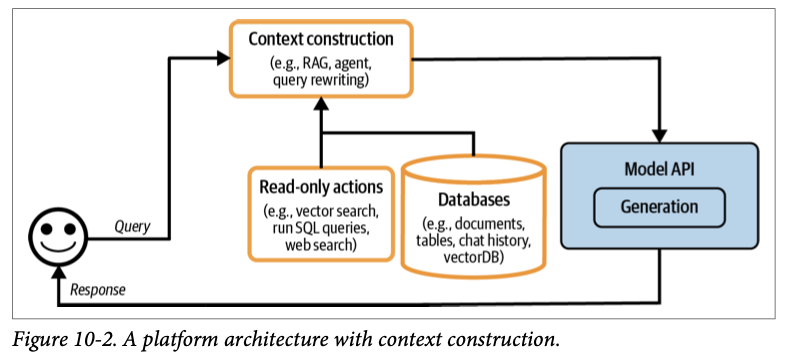
How to read this figure. The orange boxes are new. The query no longer goes straight to the model: it first enters Context construction (examples: RAG, agent, query rewriting). Feeding into it from below are Read-only actions (vector search, SQL queries, web search) and Databases (documents, tables, chat history, vector DB). Only then does the enriched prompt reach the Model API. "Read-only" is important: at this step the system can look things up but cannot change anything in the world.
Toy scenario, modelled: the point is which facts the model can and cannot know.
A railway enquiry clerk. Without a screen, he answers from memory ("trains are usually on time"). With the PNR database (SQL) and the live running-status feed (web/API tool), he tells you "your train is 40 minutes late, platform 3". The clerk did not get smarter; he got the right facts at the right moment.
Where it breaks: the clerk knows which screen to look at; a model needs your system (RAG, agent, query rewriter) to decide what to fetch.
A model can only condition on what is in its weights plus what is in its context window. Your private, fresh, user-specific data is never in the weights, so it must go in the context. That is why context construction is "feature engineering": the output can only be as good as the information you assemble.
"Would you use the provider's built-in file upload or your own RAG?" Say: "Built-in upload is fastest to start, but providers limit file types, counts and retrieval settings like chunk size. If I need many documents, custom chunking, or control over retrieval quality, I run my own retrieval over a vector DB and pass the results in." For a voice or chat agent with long-term memory, the memory store is just another context source in this box.
Retrieval and tools in depth: Ch.6 RAG and Agents. Hands-on RAG: Hands-On LLMs Ch.8. Building a feature pipeline for RAG: LLM Engineer's Handbook Ch.4.
Guardrails reduce risk and protect you and your users. Put them wherever there is exposure to risk. Broadly they come in two kinds: guardrails around inputs and around outputs.
Chapter 5 covered the many prompt hacks attackers use and how to defend against them. You can reduce these risks but never fully remove them, because of how models generate responses and because humans make unavoidable mistakes.
Leaking private data is a risk specific to external model APIs, when data must leave your organisation. It can happen in many ways:
There is no airtight way to stop leaks when you use third-party APIs, but guardrails help. Many tools automatically detect sensitive data; you decide which classes to detect. Common classes:
Many of these detectors use AI themselves, for example to judge whether a string looks like a valid home address. When a query contains sensitive data you have two options: block the whole query, or remove the sensitive part. For example, mask a phone number with a placeholder like [PHONE NUMBER]. If the model's response contains that placeholder, look it up in a PII reverse dictionary (placeholder → original value) and unmask it before showing the user. PII means personally identifiable information.
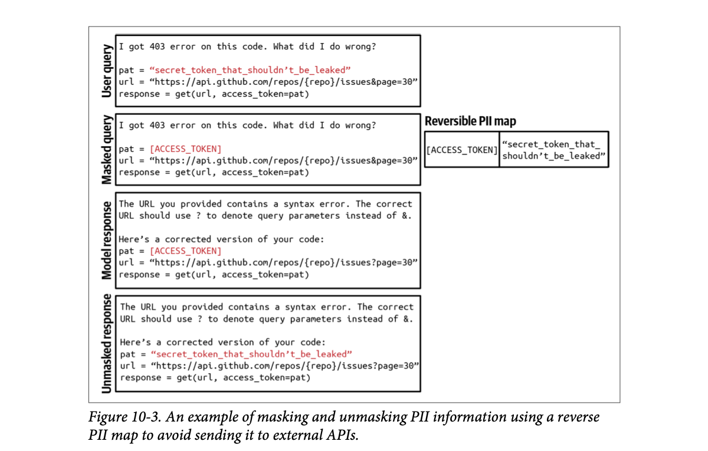
How to read this figure. Read top to bottom. User query: someone asks why their code gets a 403 error, and the code contains a real access token (in red). Masked query: the guardrail replaced the token with [ACCESS_TOKEN] and stored the pair in the reversible PII map on the right. Model response: the external model spots the bug (the URL used & where a ? should start the query parameters) and returns fixed code that still contains the placeholder. Unmasked response: your system swaps the real token back in before the user sees it. The secret never left your organisation, yet the user gets a fully working answer.
Toy detector using simple regular expressions (phone, email, Indian PAN-like ID). Real detectors use many more rules and ML models. Example values are made up.
Sending a document to a photocopy shop: you cover your Aadhaar number with a sticky note, they copy the page, you peel the note off your copy at home. The shop did its job without ever seeing the number.
Where it breaks: if the shop needs the number to do the job (e.g., the model must reason about the exact value), masking hurts quality; and detectors miss things, so it is mitigation, not a guarantee.
The model rarely needs the exact secret to reason; it needs to know "a token goes here". Replacing values with typed placeholders keeps the structure of the text intact, so the answer still fits, while the map keeps the real values inside your trust boundary.
A support bot gets "My card 4111 1111 1111 1111 was charged twice". Block option: the user gets "please remove card details", which is safe but annoying. Mask option: the model sees "My card [CARD_1] was charged twice", answers "I have raised a dispute for [CARD_1]", and the user sees the real number back (or, better, the last 4 digits only). Same safety, smoother experience.
"How do you stop PII reaching a third-party LLM?" Say: "An input guardrail detects configured sensitive classes (IDs, phones, bank details, faces, IP keywords), then either blocks or masks with placeholders, keeping a reverse map to unmask the response. It's mitigation, not a guarantee, so I also limit what goes into system prompts and tool outputs." In an LLM gateway this check is a natural pre-request hook.
A model can fail in many ways. Output guardrails have two main jobs:
To catch failures you must know what they look like. The easiest one to detect is an empty response when there should be one. (Footnote 2: users can ask for an empty response, so even this is not always a failure.) Failures differ by app; the common ones fall into two groups (quality in Chapter 4, security in Chapter 5):
Recall from Chapter 5: for security, track not only failures but also the false refusal rate. A system can be too secure, blocking legitimate requests, interrupting users' work and frustrating them.
Many failures can be fixed with simple retry logic. Models are probabilistic: ask again and you may get a different answer. If the response is empty, retry X times or until it is non-empty; if malformatted, retry until it is well-formed.
But retries cost extra latency and money: each retry is another API call. If you retry after a failure, the user-perceived latency doubles. To keep latency down, call in parallel: send the same query twice at once, get two responses, pick the better one. That means more redundant API calls, but manageable latency.
Modelled assumptions: each call fails independently with probability p; sequential retry stops at the first success; parallel sends k copies at once and waits for all of them. Numbers are illustrative, not from the book.
Read the table: both policies give the same success chance, but sequential retry pays in latency (worst case k × the call time; one retry doubles it, as the book says) while parallel pays in calls (always k).
It is also common to hand tricky requests to human operators: e.g., transfer any query containing specific phrases. Some teams use a specialised model to decide when to transfer. One team transfers when their sentiment-analysis model detects anger in user messages; another transfers after a certain number of turns so users do not get stuck in a loop.
A sweet shop packing boxes for Diwali orders. The checker at the counter (output guardrail) opens each box: wrong sweets (malformatted) → repack (retry); a broken seal (security) → never hand it over. If an order is too unusual or the customer is getting angry, he calls the owner (human fallback). Packing two boxes at once and handing over the better one is "parallel calls": faster, but more sweets used.
Where it breaks: a box can be checked fully before handing over; a streamed answer is shown while it is being made (next plate).
Sampling makes outputs random, so failures are often independent between calls. That is what makes retry effective: two independent 20% failures give only a 4% chance that both fail. Parallelism turns that same probability gain into extra cost instead of extra waiting.
"Your LLM sometimes returns invalid JSON. What do you do?" Say: "Validate the output against a schema in an output guardrail. On failure, retry; if latency matters, fire two calls in parallel and keep the first valid one. Track format-failure rate and how many are fixable, and escalate to a human or a safe fallback after N failures. I'd also watch false refusals so the guardrail doesn't block good answers."
Guardrails come with trade-offs.
Guardrails can live at many levels. Model providers add guardrails to make models better and safer, but they must balance safety and flexibility: restrictions make a model safer but can make it less usable for specific use cases. Application developers can add their own (many techniques in Chapter 5's "Defenses Against Prompt Attacks"). Out-of-the-box solutions named in the book: Meta's Purple Llama, NVIDIA's NeMo Guardrails, Azure's PyRIT, Azure's AI content filters, the Perspective API, and OpenAI's content moderation API. Because input and output risks overlap, one guardrail solution usually covers both. Some model gateways also include guardrails (next steps).
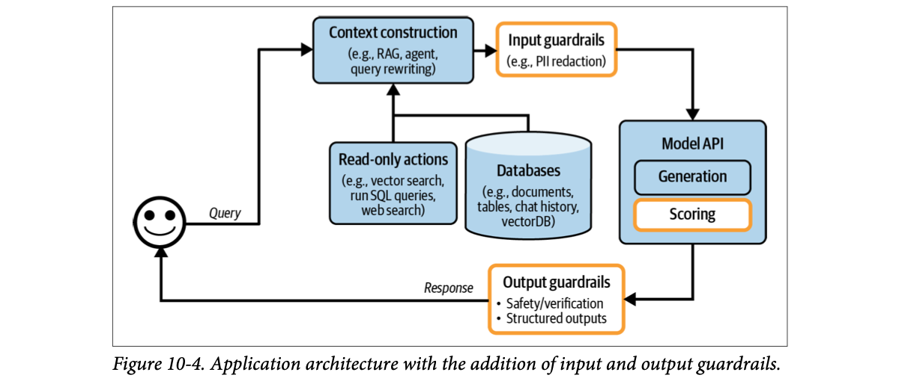
How to read this figure. Three new orange boxes. Input guardrails (e.g., PII redaction) sit between context construction and the model, so they also check what retrieval and tools added. Scoring is inside the Model API box: Huyen puts scorers there because they are often AI-powered (usually smaller and faster than the generator), though they could equally sit in the output-guardrails box. Output guardrails (safety/verification, structured outputs) sit on the return path.
Modelled: token 9 is an unsafe token. A guardrail that checks in chunks catches it only at the next check, so some unsafe text may already be on the user's screen.
Live TV vs recorded TV. A recorded show (non-streaming) can be fully censored before airing. A live cricket broadcast (streaming) uses a few seconds of delay; anything said inside the gap between checks goes out on air.
Where it breaks: TV adds a fixed delay; with LLMs you choose how many tokens to buffer, trading time-to-first-token against safety.
Most safety classifiers judge a whole text. A partial sentence can look harmless until the last few tokens, so checking early gives false negatives, and checking late lets text leak. Buffering a window of tokens before releasing them is the usual middle ground; it adds latency equal to the buffer.
"How do you put guardrails on a streaming or realtime voice response?" Say: "Output guardrails want the full text but streaming shows partial text, so there's a direct latency-vs-safety trade-off. Options: buffer a small window before release, run cheap fast checks per chunk with a heavier check at the end, and lean more on input guardrails and provider-side guardrails." For a realtime voice agent this trade-off is sharper, since audio already spoken cannot be taken back; that's an inference from the book's point about streaming, worth saying as such.
As apps grow to use more models, routers and gateways appear to manage the complexity and the cost of serving many models.
Instead of one model for every query, you can have different solutions for different query types. Two benefits:
A router usually contains an intent classifier that predicts what the user is trying to do; the query goes to the solution for that intent. A customer-support example:
An intent classifier also helps in two more ways:
Other routers help the model decide what to do next. For an agent with multiple actions, a router can be a next-action predictor: should it use a code interpreter or a search API next? For a model with a memory system, a router can predict which part of the memory hierarchy to pull from. Example: a user attaches a document mentioning Melbourne, and later asks for the cutest animal in Melbourne. The model must decide whether to rely on the attached document or search the internet.
Implementation. Intent classifiers and next-action predictors can be built on foundation models. Many teams adapt smaller language models like GPT-2, BERT and Llama 7B as intent classifiers; many train even smaller classifiers from scratch. Routers must be fast and cheap, so you can use several of them without much extra latency and cost.
Context limits. When models have different context limits, the query's context may need adjusting. Example: a 1,000-token query is headed for a model with a 4K context limit; then the system runs an action (say, web search) that brings back 8,000 tokens of context. You either truncate the context to fit the original model, or route the query to a model with a larger context limit.
Placement. Because routing is usually done by models, Huyen places routing inside the Model API box in Figure 10-5. Like scorers, routers are usually smaller than the generation models, and grouping them with other models makes models easier to manage. But note that routing often happens before retrieval: a router can decide whether a query is in scope and, if yes, whether it needs retrieval at all. Routing can also happen after retrieval (e.g., deciding to send a query to a human). Still, the most common AI app pattern is routing → retrieval → generation → scoring.
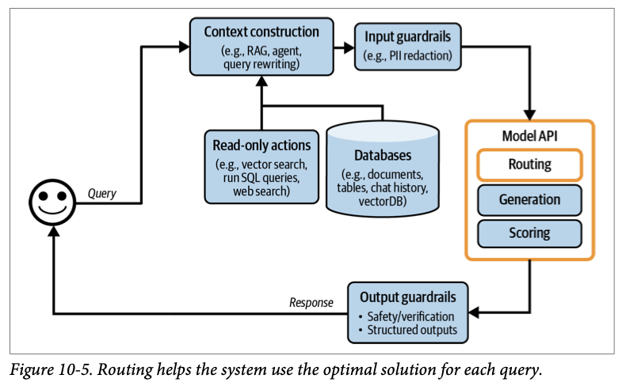
How to read this figure. Same layout as Figure 10-4, but the Model API box is now orange and has a new Routing box above Generation and Scoring. The picture places routing with the models for manageability; in the actual request flow, routing often runs first, before context construction.
Toy keyword router with modelled costs; a real one is a small trained classifier. The 1,000-token query / 4K limit / 8K search result case is the book's example.
The token counter at a government hospital OPD. One person at the front asks two questions and sends you to the right counter: cardiology, billing, or "this is the wrong hospital for that". The specialist doctors are expensive; the counter clerk is cheap and quick, so you can afford him for every patient.
Where it breaks: a clerk's mistake is visible; a misrouted LLM query often just produces a quietly worse answer, so you need routing metrics.
Routing is classification, which small models do well and fast. Spending a few milliseconds on a small classifier can save a full large-model call (stock replies, FAQ links, human handoff) or pick a cheaper or more specialised model. The saving only works if the router is much cheaper than what it saves.
"How would you cut LLM cost by 50% without hurting quality?" Say: "Add a router: a small intent classifier (a BERT-sized model or smaller) sends easy or out-of-scope queries to cheap models, stock answers or FAQs, and only hard queries to the big model. Also route by context size so overflow goes to a long-context model instead of being truncated blindly. Then measure quality per route." In a voice agent, a fast router keeps per-turn latency low because most turns never touch the biggest model.
Agents' next-action choices and memory: Ch.6. Classifiers like BERT: Hands-On LLMs Ch.4. Router lives in the gateway next: plate 08.
A model gateway is an intermediate layer that lets your organisation use different models in a unified and secure way. Its most basic job is a unified interface to different models: self-hosted ones and those behind commercial APIs. This makes code easier to maintain: if a model API changes, you update the gateway only, not every application that uses that API.
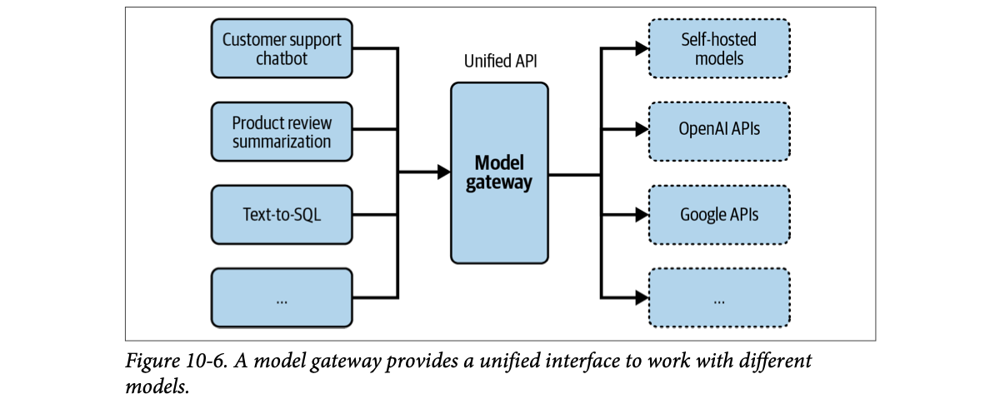
How to read this figure. Left: many apps (a support chatbot, product-review summarisation, text-to-SQL, more). Middle: one Model gateway exposing one "Unified API". Right (dashed boxes, meaning interchangeable backends): self-hosted models, OpenAI APIs, Google APIs, more. N apps × M providers becomes N + M connections.
In its simplest form a gateway is a unified wrapper. The book shows a deliberately non-functional Python sketch (no error checking or optimisation): one function per provider (an OpenAI one and a Gemini one) that each read their own API key from an environment variable, call that provider, and return the text in the same {"response": ...} shape; plus one Flask-style POST /model endpoint that reads model_type, model_name, input_data and max_tokens from the JSON body and dispatches on model_type. Here is the same idea in my own words, as a sketch:
# illustrative sketch of a gateway: one entry point, many providers
PROVIDERS = {} # name -> adapter function
def provider(name): # decorator to register an adapter
def reg(fn): PROVIDERS[name] = fn; return fn
return reg
@provider("vendor_a")
def call_vendor_a(prompt, model, max_tokens):
key = os.environ["VENDOR_A_KEY"] # keys live only in the gateway
raw = vendor_a_client(key).generate(model, prompt, max_tokens)
return {"response": raw.text} # normalise to ONE shape
@provider("self_hosted")
def call_local(prompt, model, max_tokens):
raw = http_post(LOCAL_URL, {"model": model, "prompt": prompt, "max_tokens": max_tokens})
return {"response": raw["output"]}
def handle(req): # what POST /model does
adapter = PROVIDERS[req["provider"]]
return adapter(req["input"], req["model"], req["max_tokens"])What each part does: the registry maps a provider name to an adapter; each adapter hides one vendor's SDK and key and converts its reply into one common shape; handle is the single endpoint every app calls. The names vendor_a_client and http_post are placeholders, not real APIs. The book's own listing uses the OpenAI and Google Python SDKs and is explicitly not meant to run.
Gateways are relatively easy to build, so there are many off-the-shelf ones: Portkey's AI Gateway, MLflow AI Gateway, Wealthsimple's LLM Gateway, TrueFoundry, Kong, and Cloudflare. In the architecture, the gateway replaces the Model API box:
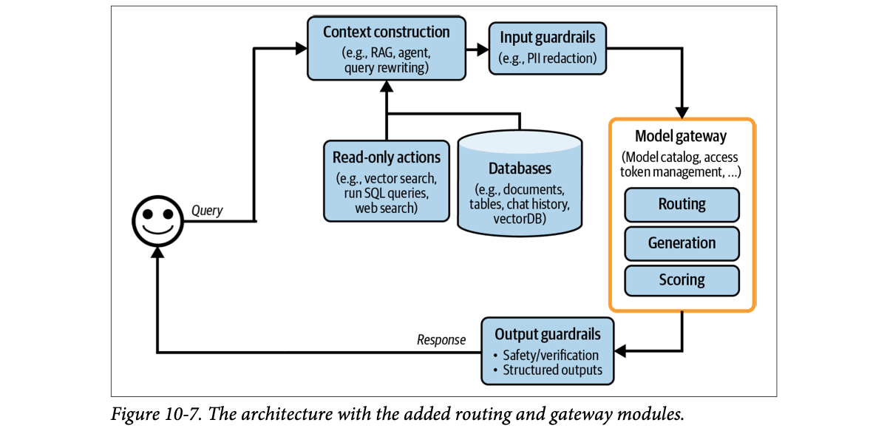
How to read this figure. The orange box is now titled Model gateway, with the notes "model catalog, access token management, ...". Routing, Generation and Scoring live inside it. Everything else (context construction, guardrails, data sources) is unchanged: the gateway is a drop-in replacement for direct model calls.
Side note in the book: a similar layer, a tool gateway, could be useful for accessing many tools, but it is not covered because it was not a common pattern at the time of writing.
Modelled policy: intern-sandbox may only use the small model; 429 → wait and retry once, then fall back; outage → fall back immediately. Every step is logged with a request id.
A company travel desk. Employees never hold the airline corporate account passwords; they tell the travel desk "Delhi → Mumbai, Friday". The desk knows every airline's booking system, enforces "interns fly economy only", tracks each team's spend, and if IndiGo's site is down, books Air India instead.
Where it breaks: a travel desk is slow and human; a gateway must add only milliseconds, or it becomes the bottleneck and a single point of failure.
It is the classic API-gateway / adapter pattern from backend engineering, applied to model providers. Centralising the call path means cross-cutting concerns (auth, quotas, retries, fallbacks, logging, caching, guardrails) are written once instead of in every app.
"Design an LLM gateway for a company." Say: "A unified API over self-hosted and vendor models; vendor keys live only in the gateway; per-team auth and model allow-lists; usage metering and rate limits; fallback on 429/5xx to alternative models with retry-after-wait; logging of every request for analytics; optional caching and guardrails as middleware." This is directly the kind of system you build, so speak from that experience, and mention the book's off-the-shelf examples (Portkey, MLflow AI Gateway, Kong, Cloudflare) as build-vs-buy options.
Router inside the gateway: plate 07. Caching and guardrails the gateway may host: plate 09, plate 06. Logs it produces: plate 15. Serving and deploying endpoints: LLM Engineer's Handbook Ch.10.
Caching has long been used in software to cut latency and cost, and many software caching ideas carry over to AI apps. Inference caching (KV caching and prompt caching) was covered in Chapter 9; this section is about system caching. Since caching is old and well documented, the book covers it only in broad strokes. There are two major mechanisms: exact caching and semantic caching.
With exact caching, a cached item is used only when exactly that item is requested. Example: a user asks for a summary of a product; the system checks whether a summary of this exact product is cached. If yes, return it; if not, summarise and cache the result.
On an e-commerce site, user X asks a seemingly generic question about the return policy for electronics. But the policy depends on membership, so the system fetches X's information and writes an answer containing it. Mistaking the question for a generic one, the system caches the answer. Later user Y asks the same question and gets X's cached answer, revealing X's information to Y.
Modelled stream of 24 queries (q = generic product questions; "my order" = user-specific; "weather" = time-sensitive; "returns" = the book's membership-dependent case asked by users X and Y). Green = hit, grey = miss, dashed = not cached, red = leaked another user's answer.
Try it: turn off "skip user-specific" and watch "my order" answers get reused; turn on "include user id in cache key" and the returns-policy leak disappears (at the cost of fewer hits). Note a leak still counts as a "hit" for the hit rate, which is exactly why hit rate alone is a dangerous metric.
A chai stall at rush hour keeps a kettle of plain chai ready, because most people order exactly that. A "masala, less sugar, oat milk" order is made fresh. And the vendor never pours from a cup already labelled with someone's name.
Where it breaks: chai goes cold visibly; a stale cached answer looks just as fresh as a new one, so you need explicit expiry and do-not-cache rules.
An exact cache is a key → value map. Everything depends on the key: too coarse (just the question text) and personalised answers leak across users; too fine (full prompt with timestamps) and nothing ever hits. A good key includes exactly the inputs that change the answer: question, relevant user attributes, model and prompt version.
"Would you cache LLM responses? Any risks?" Say: "Yes, for repeated, expensive, non-personal queries (and for retrieval results), in Redis or Postgres with LRU/LFU eviction. I'd skip user-specific and time-sensitive queries, maybe with a small classifier, and make sure anything that personalises the answer is in the cache key; otherwise you get the classic leak where user Y sees user X's answer."
With semantic caching, a cached item is reused even if it is only semantically similar, not identical, to the new query. Example: one user asks "What's the capital of Vietnam?" and gets "Hanoi". Later another asks "What's the capital city of Vietnam?". Same meaning, different words. A semantic cache returns the first answer instead of computing a new one. This raises the hit rate and may cut cost, but it can reduce your model's performance (you may return the wrong answer).
It only works if you can reliably tell whether two queries are similar. The common approach is semantic similarity (Chapter 3):
This needs a vector database to store the embeddings of cached queries.
Huyen is sceptical: compared with other caching, semantic caching's value is more dubious, because many of its parts can fail:
It may still be worth it if the cache hit rate is high (a good share of queries can be answered from cache). But before adding its complexity, evaluate the efficiency, cost and performance risks.
Similarity scores are modelled (as an embedding model might score them), not computed. "Same intent?" is the ground truth a human would give.
Drag the threshold: a low threshold boosts hit rate but serves "Hanoi" for Laos; a high one is safe but barely reuses anything. There is no setting with high hit rate and zero wrong answers here, which is exactly Huyen's point about trial and error.
With caches added, the platform looks like Figure 10-8. KV cache and prompt cache are usually implemented by model API providers, so they are not drawn; if drawn, they would go in the Model API box. There is a new arrow that writes generated responses into the cache.
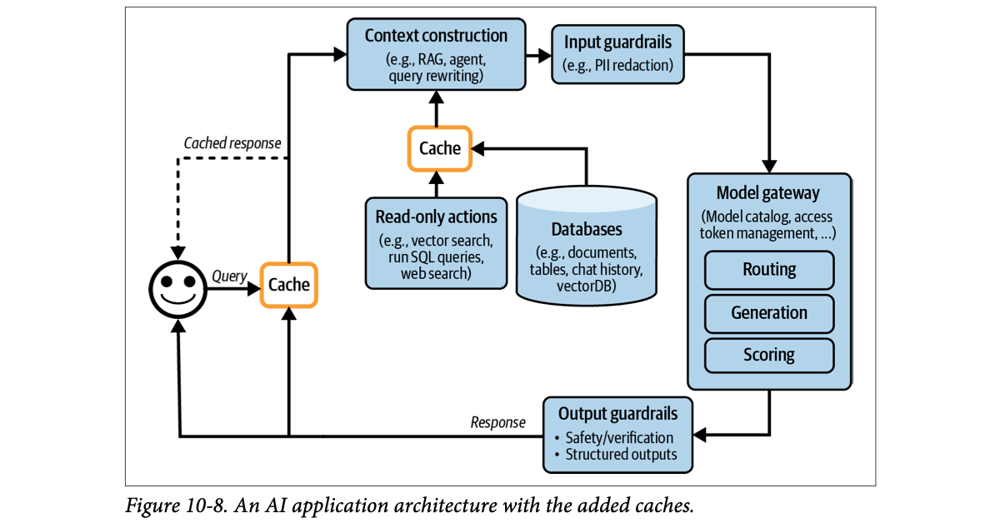
How to read this figure. Two orange Cache boxes. The first sits right after the user's query: on a hit, the dashed "Cached response" arrow goes straight back to the user and nothing else runs. The second sits between the data sources (read-only actions, databases) and context construction, caching retrieval and tool results. At the bottom, the response line now also feeds up into the first cache, so new answers get stored.
A school teacher who has heard "Ma'am, can I go to the washroom?" in fifty wordings answers all of them the same way. Smart. But if a child says "Ma'am, can I go home?", answering "yes, come back in 5 minutes" because it "sounds similar" is a disaster.
Where it breaks: the teacher understands meaning; an embedding only measures closeness in a vector space, where "capital of Laos" and "capital of Vietnam" are very close.
Embeddings place sentences with shared words and topics close together. Small but crucial differences (a country name, "not", a product model) move the vector only a little, so cosine similarity stays high even when the correct answer changes completely. That is why one global threshold can never perfectly separate "same question" from "different question".
10,000 queries a day, a large-model call costs ₹1 and takes 2 s. Semantic lookup costs ₹0.02 and 50 ms for every query. At a 30% hit rate: cost = 10,000 × 0.02 + 7,000 × 1 = ₹7,200 instead of ₹10,000 (28% saving), and hits answer in 50 ms. But if 5% of hits are wrong, that is 150 wrong answers a day. Whether that is acceptable depends on your app; at a 3% hit rate the lookup overhead barely pays for itself.
"Should we add a semantic cache?" Say: "Only after measuring. It needs good embeddings, a vector DB, and a tuned threshold, and it adds a vector search to every request. Wrong matches return wrong answers silently. I'd log candidate matches offline first, estimate hit rate and false-hit rate at different thresholds, and only ship if the hit rate is high and false hits are rare. Exact caching is the safer first step."
Semantic similarity and embeddings: Ch.3, Hands-On LLMs Ch.2. Vector search: Ch.6. Exact caching: plate 09.
So far every query follows a sequential flow. But as Chapter 6 showed, an application flow can have loops, parallel execution, and conditional branching. Agentic patterns let you build such complex apps. Example: after generating an output, the system decides it has not finished the task and needs another retrieval for more information. The original response plus the new context goes back into the same model or a different one. That creates a loop:
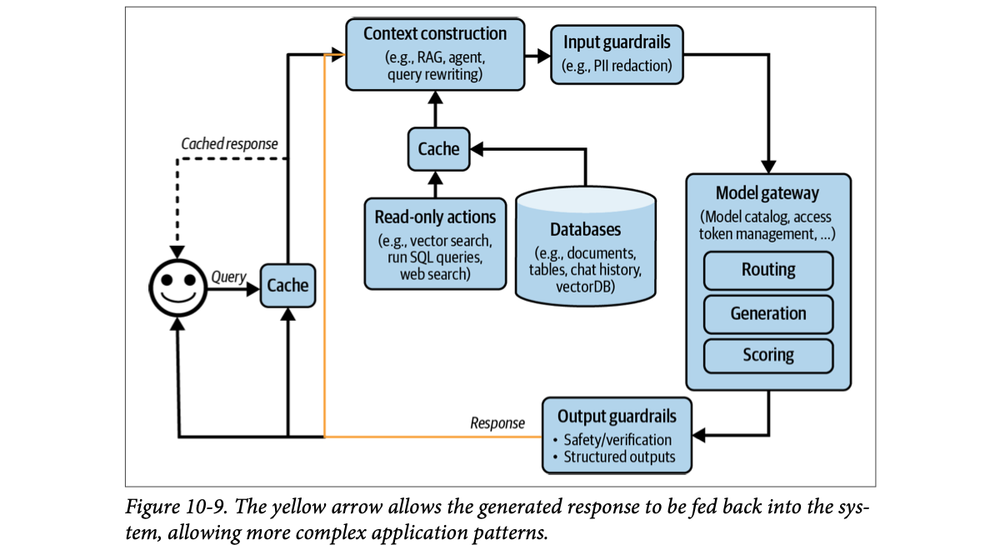
How to read this figure. The caption says "yellow"; in the image the new line is orange/amber. It starts on the response path (after output guardrails) and runs up into Context construction. So a response does not have to go to the user: it can become input for another round of retrieval and generation, as many times as the logic decides.
A model's outputs can also trigger write actions: composing an email, placing an order, starting a bank transfer. Write actions let the system change its environment directly. As Chapter 6 said, they make a system vastly more capable but expose it to much more risk, so give a model write access with the utmost care.
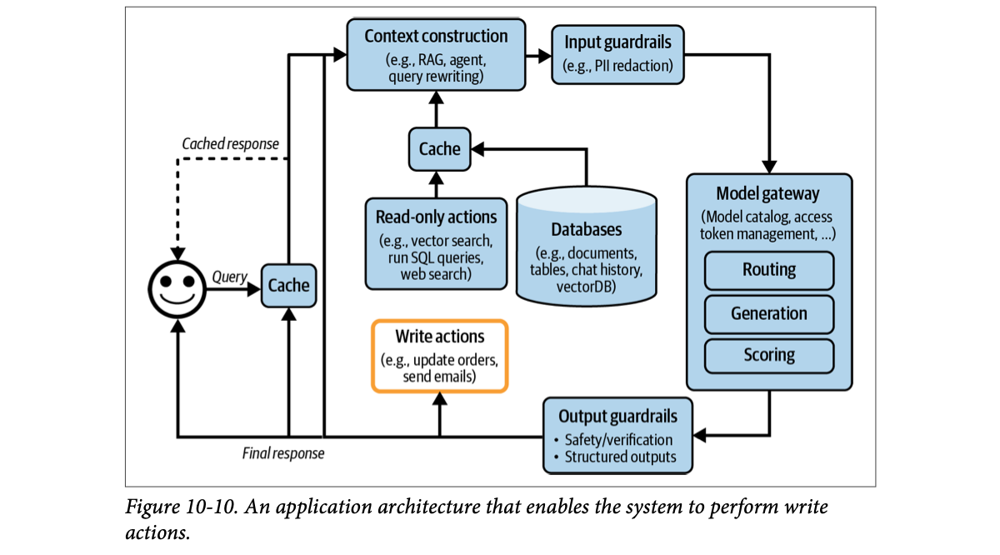
How to read this figure. A new orange Write actions box (examples: update orders, send emails) hangs off the response path. Note the label on the user arrow is now "Final response": with loops and actions, intermediate responses exist that the user never sees. Compare the read-only actions box (top) with the write actions box (bottom): the first only reads the world, the second changes it.
If you followed all five steps, your architecture is now quite complex. Complex systems solve more tasks but also bring more failure modes and are harder to debug, because there are many possible points of failure. Hence the next section: observability.
A read-only clerk can look up your bank balance; a write-enabled clerk can also transfer money. You'd let a new clerk do the first on day one; the second only with a supervisor's sign-off and a daily limit.
Where it breaks: a human clerk hesitates when something looks odd; a model following injected instructions will not, which is why write actions need system-level checks, not trust.
Loops turn a fixed pipeline into a program whose path depends on the model's own outputs, so the number of steps, the cost and the latency become variable. Write actions add side effects: they can't be undone by regenerating, can't be safely cached, and need idempotency and approval logic like any other backend mutation.
"How do you make a tool-calling agent safe to take real actions?" Say: "Separate read-only tools from write tools. Write tools get least privilege, input validation, idempotency keys, limits, and human or policy approval for high-risk actions. Cap loop iterations and log every step so the trace shows why an action ran." This maps straight onto tool-calling agents that book, cancel or update things for users.
Agents, planning, tools and failure modes: Ch.6. Traces to debug loops: plate 15. Agents hands-on: Hands-On LLMs Ch.7.
Huyen gives observability its own section, but stresses it should be integral to product design, not an afterthought. The more complex the product, the more it matters.
Observability is practised across all of software engineering; it is a big industry with established best practices and many proprietary and open-source tools. (Footnote 4: at the time of writing, the combined market value of a few of the largest observability companies, Datadog, Splunk, Dynatrace and New Relic, was close to $100 billion.) To avoid reinventing the wheel, the book focuses on what is unique to foundation-model apps; the book's GitHub repository has resources for general observability. (Footnote 5: her earlier book, Designing Machine Learning Systems (O'Reilly, 2022), has a monitoring chapter; an early draft is on her blog as "Data Distribution Shifts and Monitoring".)
The goal of monitoring is the same as the goal of evaluation: mitigate risks and discover opportunities. Risks: application failures, security attacks, and drifts. Opportunities: app improvements and cost savings. Monitoring also keeps you accountable by making your system's performance visible.
Three metrics, borrowed from the DevOps community, measure how good your observability is:
A high CFR doesn't necessarily mean your monitoring is bad. But you should rethink your evaluation pipeline so bad changes are caught before deployment. Evaluation and monitoring must work closely together: evaluation metrics should translate well into monitoring metrics (a model that does well in evaluation should also do well in monitoring), and issues found in monitoring should be fed back into the evaluation pipeline.
Edit the minutes. Incidents are modelled examples.
Notice how the slow drift (3 days to detect) dominates MTTD. Quiet degradations, not loud outages, are what AI monitoring most needs to catch faster.
A housing society's water tank. MTTD: how long until someone notices the tap is dry. MTTR: how long until the plumber fixes it. CFR: how often the "repair" itself causes a new leak. A float alarm on the tank cuts MTTD from "morning bath time" to "two minutes".
Where it breaks: a dry tap is obvious; a model that got 10% worse at answering looks perfectly healthy unless you measure quality.
Evaluation checks a system before release on a fixed dataset; monitoring checks it after release on live traffic. If the same metrics exist on both sides, a monitoring alert can become a new evaluation test case, and a passing evaluation predicts a quiet dashboard. That loop is what lowers CFR over time.
"How do you measure whether your monitoring is good?" Say: "MTTD, MTTR and change failure rate from DevOps. For LLM apps I'd add that eval metrics should mirror production metrics, so issues found in monitoring become regression tests, and a high CFR means the pre-deploy eval pipeline needs work."
Evaluation pipelines: Ch.4. MLOps monitoring practice: LLM Engineer's Handbook Ch.11.
Since the mid-2010s the industry has preferred the word observability over monitoring. The difference:
In this book, "monitoring" means the act of tracking a system's information, and "observability" means the whole process of instrumenting, tracking and debugging the system.
Modelled scenario.
Monitoring is a thermometer: it tells you the patient has fever. Observability is the thermometer plus blood reports, history and scans recorded in advance, so the doctor can say "dengue" without ordering new tests.
Where it breaks: doctors can order new tests later; for a past production incident, data you didn't log is gone forever.
Debugging needs evidence of internal state at the moment of failure. If that evidence (prompt, retrieved docs, model version, config) is captured on every request, any later question can be answered by querying stored data. If not, the only way to learn is to change code and wait for a repeat.
"Monitoring vs observability?" Say: "Monitoring tracks external outputs and tells you that something is wrong. Observability means the system is instrumented so you can infer why from logs, metrics and traces, without deploying new code."
Most people think "metrics" when they hear monitoring. But metrics are not the goal. Frankly, most companies don't care about your output-relevancy score unless it serves a purpose. A metric's job is to tell you when something is wrong and to reveal opportunities for improvement.
So first decide which failure modes you want to catch, then design metrics around them. Don't want hallucinations? Design metrics that detect them, e.g., whether the output can be inferred from the context. Don't want to burn through API credits? Track cost metrics: input and output tokens per request, your cache's cost and hit rate.
Foundation models produce open-ended outputs, so there are many ways to go wrong. Metrics design needs analytical thinking, statistics, and often creativity, and is highly application-specific. The book has covered many quality metrics (Chapters 4–6 and this chapter) and ways to compute them (Chapters 3 and 5). A quick recap:
| Metric family | What to track (from the book) |
|---|---|
| Format failures (easiest) | How often outputs are invalid JSON (if you expect JSON), and of those, how many are easily fixed (missing closing bracket: easy; missing expected keys: harder). |
| Open-ended quality | Factual consistency; relevant generation-quality metrics like conciseness, creativity, positivity. Many can be computed with AI judges. |
| Safety | Toxicity metrics; private/sensitive info in inputs and outputs; how often guardrails trigger; how often the system refuses; abnormal queries (may reveal edge cases or prompt attacks). |
| Conversational signals | How often users stop a generation halfway; average turns per conversation; average tokens per input (harder tasks, or users learning to be concise?); average tokens per output (are some models more verbose? which queries get long answers?); the model's output token distribution over time (more or less diverse?). |
| Length | Also important for latency and cost: longer contexts and responses usually mean more latency and higher cost. |
| Per component | RAG retrieval: context relevance and context precision. Vector DB: storage needed to index data and query time. |
| Business | Correlate your metrics with each other and with your north star metrics: DAU (daily active users), session duration (time a user spends actively engaged), subscriptions. Strongly correlated metrics suggest how to improve the north star; uncorrelated ones suggest what not to optimise. |
| Latency (from Ch.9) | TTFT (time to first token), TPOT (time per output token), total latency. Track them per user to see how the system scales with more users. |
| Cost | Number of queries; volume of input and output tokens, e.g. tokens per second (TPS); with rate-limited APIs, requests per second, to stay within limits and avoid interruptions. |
Spot checks vs exhaustive checks. Spot checks sample a subset of data to find issues quickly; exhaustive checks evaluate every request for a full view. The choice depends on your requirements and resources; a combination gives a balanced strategy.
Break metrics down. Make sure every metric can be sliced by users, releases, prompt/chain versions, prompt/chain types, and time. This granularity shows where performance varies and pinpoints specific issues.
Total latency ≈ TTFT + TPOT × (output tokens − 1). A simple model; inputs are yours to set.
A cricket team's analyst does not track everything; she tracks what predicts losing: dot-ball percentage, dropped catches, death-over economy. And she always splits by bowler, venue and match phase, because "economy 8.2" alone tells you nothing about whom to drop.
Where it breaks: cricket metrics are well established; for a new AI app you often have to invent the right metrics yourself.
Aggregates hide causes. A 2% drop overall might be a 20% drop for one prompt version used by 10% of users. Slicing by version, user group and time turns a vague alarm into a specific suspect, which is what MTTR depends on.
"What would you monitor for an LLM product?" Say: "Start from failure modes. Format failures (invalid JSON rate, fixable share), quality via AI judges (factual consistency), safety (toxicity, PII, guardrail triggers, refusal rate), conversational signals (stop rate, turns, tokens in/out), latency (TTFT, TPOT, total, per user), cost (tokens, TPS, RPS vs rate limits) and cache hit rate, all sliced by release, prompt version, user and time, and correlated with a north star like DAU." For realtime voice, TTFT is the one users feel most.
Latency metrics and their trade-offs: Ch.9. AI judges and quality metrics: Ch.3, Ch.4. RAG metrics: Ch.6. Conversational feedback as metrics: plates 20–22.
Metrics are usually aggregated: they compress many events over time and tell you at a glance how the system is doing. But many questions need more. After seeing a spike, you might ask "has this happened before?". Logs answer that.
If metrics are numerical measurements of attributes and events, logs are an append-only record of events. A typical production debugging flow:
For fast detection, metrics must be computed quickly. For fast response, logs must be readily available. If logs arrive 15 minutes late, you wait for them to debug something that happened 5 minutes ago.
Log everything, because you don't know what you'll need later:
Logging everything means logs grow fast. Many tools for automated log analysis and log anomaly detection are AI-powered. You can't read all logs by hand, but it is useful to manually inspect production data daily to see how users use your app. Shankar et al. (2024) found that developers' sense of what counts as a good or bad output changes as they see more data, which lets them rewrite prompts to get more good responses and update their evaluation pipeline to catch bad ones.
If logs are disjointed events, traces are rebuilt by linking related events into a full timeline of one transaction, showing how each step connects from start to finish. A trace is the detailed record of one request's execution path through the system's components and services. In an AI app, it shows the whole process from query to final response: the actions taken, the documents retrieved, the final prompt, plus time and cost per step where measurable. Ideally you can follow each query's transformation step by step and, when it fails, pinpoint where: bad processing, irrelevant retrieved context, or a wrong model response.
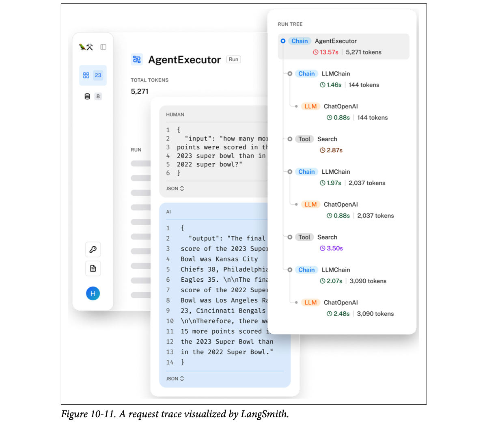
How to read this figure. Left: the run, an AgentExecutor that used 5,271 total tokens. The "HUMAN" panel holds the input question (how many more points were scored in the 2023 Super Bowl than in 2022); the "AI" panel holds the final answer (Kansas City Chiefs 38, Philadelphia Eagles 35 in 2023; Los Angeles Rams 23, Cincinnati Bengals 20 in 2022; so 15 more points). Right: the run tree. The root (13.57 s, highlighted red as slow) contains alternating LLMChain steps (each wrapping a ChatOpenAI call) and Search tool calls, each with its own time and token count. The token counts grow (144 → 2,037 → 3,090) because each LLM step carries the accumulated search results.
Durations and tokens are from Figure 10-11. Start offsets are my assumption (steps run one after another); the gap to 13.57 s is unattributed overhead.
A courier parcel. Metrics: "3% of parcels late this week". Logs: every scan at every hub, in one huge list. A trace: the tracking page for your parcel ID, every scan linked in order with timestamps, so you can see it sat in the Nagpur hub for 2 days.
Where it breaks: a parcel's path is fixed by geography; an agent's path is decided at runtime, so traces of two requests to the same app can look completely different.
A trace works by passing a request ID (and parent span IDs) through every component; each log line carries them, so a tool can rebuild the tree afterwards. Without consistent IDs, logs from the retriever, the gateway and the model can't be joined, and "where did this answer go wrong?" has no answer.
"A user says the bot gave a wrong answer yesterday. How do you debug it?" Say: "Find the request by user and time, open its trace: the processed query, retrieved documents, the final prompt, model and sampling config, tool calls and outputs, with timing and cost per step. Then I can tell whether it was query processing, irrelevant retrieval, or the model. That only works if we log everything with IDs from day one." In a voice pipeline, the same trace would include per-step latency, which is how you find which hop is eating the turn budget.
Debugging agents: Ch.6. Prompt monitoring and tracing tools in practice: LLM Engineer's Handbook Ch.11. Gateway as a logging point: plate 08.
The more parts a system has, the more things can change. In an AI application, three kinds of change:
Edit one character (fix a "typo") and the fingerprint changes. Toy 32-bit hash for the demo; in practice you would log a proper hash (e.g. SHA-256) with every request and alert on change.
Your favourite restaurant keeps the same name and menu, but quietly changes the cook. The menu (API) is identical; the biryani (model behaviour) is not. Regulars notice only after a few bad meals.
Where it breaks: you can taste biryani instantly; model drift often shows up only as a slow trend in metrics, unless you pin model versions and re-run evals.
An AI app's behaviour is a function of (prompt, model, user inputs, data). Drift in any one shifts outputs. Prompts and model versions are under your control or at least loggable, so detect them directly (hash, pinned version string). User behaviour isn't, so you detect it statistically (distributions of input length, topics) and then investigate.
"Quality dropped but nobody deployed anything. What happened?" Say: "Check the three drift sources: did the system prompt or template change (compare logged hashes), did the provider update the model behind the same API name (pin versions; Voiceflow saw 10% from one GPT-3.5 version bump), or did users change behaviour (input length and topic distributions)? Then confirm with traces."
Model API versions and evaluation: Ch.4. Versioning prompts: Ch.5. Data distribution shifts in general: LLM Engineer's Handbook, MLOps principles.
An AI app can get complex: multiple models, many databases, many tools. An orchestrator lets you specify how these components work together into an end-to-end pipeline and makes sure data flows between them. At a high level it works in two steps:
The orchestrator passes data between components. It should provide tooling to check that each step's output is in the format the next step expects, and ideally notify you when the flow breaks due to errors like component failures or data mismatch failures.
Book's aside: an AI pipeline orchestrator is different from a general workflow orchestrator like Airflow or Metaflow.
Parallelise for latency. With strict latency requirements, do as much as possible in parallel. Example: a routing component and a PII removal component don't depend on each other, so run them at the same time.
Tools. Many AI orchestration tools exist: LangChain, LlamaIndex, Flowise, Langflow, Haystack. Because retrieval and tool use are common patterns, many RAG and agent frameworks are also orchestration tools.
Start without one. It's tempting to jump to an orchestrator at the start of a project, but consider building without one first. Every external tool adds complexity, and an orchestrator can abstract away critical details of how your system works, making it hard to understand and debug.
Later in development you may decide an orchestrator helps. Three aspects to evaluate:
A wedding planner. Components definition: the list of vendors (caterer, decorator, DJ). Chaining: the order of events (haldi → mehendi → wedding → reception), making sure each hand-off happens (the decorator finishes before guests arrive). And the planner does flowers and lighting at the same time, not one after the other.
Where it breaks: a planner who hides all details from you is relaxing until something goes wrong and you can't tell which vendor failed. Same with heavy orchestration frameworks.
A pipeline is function composition: output of f becomes input of g. Composition is only safe when types match, so the orchestrator's real value is enforcing contracts between steps, running independent steps concurrently, and surfacing failures. The cost is an extra layer between you and what actually runs.
"Would you use LangChain for this?" Say: "Maybe later. I'd start with plain code so I understand every call, then adopt an orchestrator if it clearly helps, judged on integration/extensibility, support for branching, parallelism and error handling, and ease of use with no hidden API calls or added latency. Either way I'd run independent steps like routing and PII removal in parallel." For a latency-tight voice agent, hidden calls and abstraction overhead matter even more.
Agent frameworks and control flows: Ch.6. LangChain chains hands-on: Hands-On LLMs Ch.7. ML pipeline orchestration (ZenML): LLM Engineer's Handbook Ch.2.
User feedback has always mattered in software in two ways: evaluating the app's performance and informing its development. In AI apps it matters even more: user feedback is proprietary data, and data is a competitive advantage. A well-designed feedback system is needed to build the data flywheel from Chapter 8.
Feedback can personalise models for individual users and also train future model versions. As data becomes scarcer, proprietary data is worth more than ever. A product that launches fast and attracts users early can gather data to keep improving its models, making it hard for competitors to catch up.
Footnote 7: a key disadvantage of launching an open-source app instead of a commercial one is that collecting feedback is much harder: users can deploy it themselves, and you have no idea how it's used.
Remember: user feedback is user data. It needs the same care as any data. Respect user privacy; users have the right to know how their data is used.
Modelled numbers: each turn, more users → more feedback → a better model → more users. Illustrates the compounding the book describes, not real data.
A new dosa stall that opens first in the neighbourhood learns quickly that people want less oil and spicier chutney, and adjusts. When a second stall opens a year later, the first already knows the customers. The learning itself is the moat.
Where it breaks: the dosa learning is in the cook's head; for AI, the learning must be captured as data, which only happens if you design for it.
Public data is available to every competitor; your users' interactions with your product are not. Feedback turns usage into labelled examples (good/bad, preferred/rejected) that can drive evaluation, prompts, finetuning and personalisation, so usage growth becomes quality growth.
"What's your moat as an AI startup if everyone uses the same base models?" Say: "Proprietary data from user feedback, feeding a data flywheel: more usage gives more feedback, which improves the product, which brings more usage. That's why feedback collection is an engineering concern, built in from launch, with privacy and consent handled properly."
Traditionally feedback is explicit or implicit.
The conversational interface makes giving feedback easier: users encourage good behaviour and correct errors just as they would in everyday talk. The language they use to direct the AI carries feedback about both the app's performance and the user's preferences.
Example. You ask an AI assistant to find a hotel for three nights in Sydney. It suggests three: a historic boutique hotel in The Rocks (~$400/night, charming streets, near iconic sights), a stylish house hotel in Surry Hills (~$200/night, trendy, cafés and art galleries), and a beachside hotel at Bondi (~$300/night, relaxing, for city exploration too). How you reply reveals your preference.
Feedback extracted from conversations can be used for:
Implicit conversational feedback can be inferred from both the content of user messages and their patterns of communication. Because it's blended into ordinary conversation, it's also hard to extract. Intuition about conversational cues gives you a first set of signals, but you need rigorous data analysis and user studies to really understand them.
Conversational feedback got more attention with chatbots' popularity, but it was an active research area for years before ChatGPT. Since the late 2010s, the reinforcement learning (RL) community has tried to make RL algorithms learn from natural-language feedback, many with promising results (Fu et al., 2019; Goyal et al., 2019; Zhou and Small, 2020; Sumers et al., 2020). It also interested early conversational AI apps: Amazon Alexa (Ponnusamy et al., 2019; Park et al., 2020), Spotify's voice control (Xiao et al., 2021), and Yahoo! Voice (Hashimoto and Sassano, 2018).
A sabziwala doesn't hand out a feedback form. He notices you always pick the smaller tomatoes, frown at the price of capsicum, and say "not like last week's" about the spinach. That's implicit, conversational feedback, and he uses it.
Where it breaks: he reads your face and tone; an app gets only text and clicks, which are much noisier.
Each user turn is both a new request and a reaction to the last response. Separating the two (what the user wants next vs what they thought of the previous answer) is an information-extraction problem, which is why it needs signal design plus validation against user studies, not just intuition.
"How do you get feedback from a chatbot when users never click thumbs?" Say: "Mine the conversation: the next user turn is implicit feedback on the last answer. Rephrasing, 'no, I meant', complaints, stopping the answer, or accepting a suggestion are all signals. Use them for evaluation metrics, for training data, and for personalisation. Validate each signal against labelled samples first." Early voice assistants (Alexa, Spotify voice) studied exactly this, which is relevant to voice-agent work.
Natural language feedback signals: plate 20. Preference data from comparisons: Ch.7, LLM Engineer's Handbook Ch.6.
Feedback taken from the content of messages is called natural language feedback. A few signals that tell you how a conversation is going (worth tracking in production):
If a user ends a response early, the conversation probably isn't going well. Forms: stopping generation halfway, exiting the app (web and mobile), telling the model to stop (voice assistants), or simply leaving the agent hanging (not answering which option it should go ahead with).
A follow-up that starts with "No, …" or "I meant, …" suggests the previous response missed the mark. Users may also rephrase the request; rephrase attempts can be detected with heuristics or ML models.
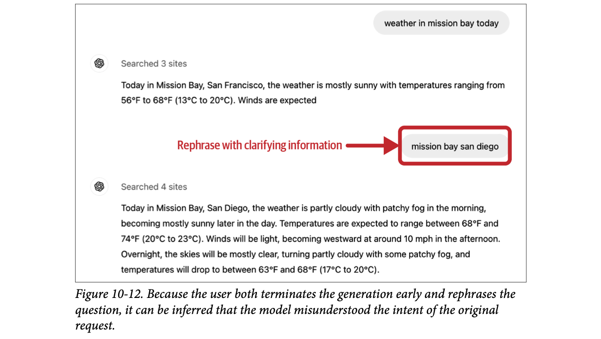
How to read this figure. The user asks for "weather in mission bay today". The model assumes Mission Bay, San Francisco, and its answer is cut off mid-sentence ("Winds are expected": the user stopped it). The red box marks the next message, "mission bay san diego": a rephrase with clarifying information. The second answer is about San Diego. Two signals together (early stop + rephrase) say the first answer misread the intent.
Users can also point out specific things the model should have done differently. If a summary confuses a character, the user might say "Bill is the suspect, not the victim", and the model should revise. This action-correcting feedback is especially common in agentic use cases, where users nudge the agent toward better actions: for market analysis of company XYZ, "You should also check XYZ's GitHub page" or "Check the CEO's X profile".
Sometimes users ask for explicit confirmation: "Are you sure?", "Check again", "Show me the sources". This doesn't necessarily mean the answer is wrong; it may mean the answers lack the details the user wants, or it may indicate general distrust in your model.
Some apps let users edit the model's response directly. If a user corrects generated code, that's a very strong signal the edited part wasn't right. User edits are also valuable preference data. Recall preference data has the format (query, winning response, losing response) and is used to align models to human preference. Each edit makes one example: the original output is the losing response; the edited one is the winning response.
Try changing == 1 to == 0. If you don't change anything, no preference pair is created (the user accepted the output).
Dictating a letter to a typist. "No, I meant Tuesday" (error correction). You grab the page and cross out a line yourself (user edit: the strongest signal). You walk out mid-sentence (early termination). "Are you sure that's the right address?" (asking for confirmation, maybe distrust).
Where it breaks: the typist sees your face; the system sees only the words and clicks, and "Are you sure?" may just be a careful user.
A user's correction contains information the model lacked: the intended meaning (San Diego, not San Francisco) or the right output (fixed code). Logging the pair (what the model said, what the user wanted) gives you evaluation failures for free and, in the edit case, a ready-made training pair for preference finetuning.
"What implicit signals would you log for a voice or chat agent?" Say: "Early termination (user interrupts or says stop, or leaves the agent hanging), error corrections ('no', 'I meant'), rephrases detected by heuristics or a small model, requests for confirmation or sources, action corrections for agents, and edits, which double as (chosen, rejected) preference pairs." The book explicitly lists telling a voice assistant to stop as early termination, so barge-in events in a voice agent are a natural signal to track.
Preference finetuning (RLHF, DPO): Ch.2, Ch.7, LLM Engineer's Handbook Ch.6. Copilot's accept/ignore design: plate 25.
Complaints. Often users just complain without trying to fix anything: the answer is wrong, irrelevant, toxic, too long, lacking detail, or just bad. Table 10-1 shows eight groups of natural-language feedback found by automatically clustering the FITS dataset (Feedback for Interactive Talk & Search; Xu et al., 2022), with results from Yuan et al. (2023):
| # | Feedback type (paraphrased) | Count | % |
|---|---|---|---|
| 1 | Restate / clarify their demand again | 3,702 | 26.54% |
| 2 | Complain the bot (1) doesn't answer, (2) gives irrelevant info, or (3) tells the user to find the answer themselves | 2,260 | 16.20% |
| 3 | Point to specific search results that contain the answer | 2,255 | 16.17% |
| 4 | Suggest the bot should use the search results | 2,130 | 15.27% |
| 5 | Say the answer is (1) factually wrong or (2) not grounded in the search results | 1,572 | 11.27% |
| 6 | Say the answer isn't specific / accurate / complete / detailed enough | 1,309 | 9.39% |
| 7 | Say the bot sounds unconfident, always opening with "I am not sure" or "I don't know" | 582 | 4.17% |
| 8 | Complain about repetition or rudeness | 137 | 0.99% |
The bars redraw Table 10-1's percentages. Read it: about a quarter of all feedback is users restating what they wanted, and groups 3–5 (about 43% together) are about using or being grounded in search results, which tells a search-assistant team exactly where to focus.
Knowing how the bot fails the user is key to improving it. If users dislike verbose answers, change the prompt to be more concise. If they're unhappy that answers lack detail, prompt the bot to be more specific.
Sentiment. Complaints can also be plain negative sentiment (frustration, disappointment, ridicule) with no reason given, like "Uggh". It may sound dystopian, but analysing a user's sentiment through a conversation can show how the bot is doing. Some call centres track users' voices during calls: if a user gets increasingly loud, something is wrong. Conversely, if someone starts angry but ends happy, the conversation may have solved their problem.
The model's own responses are a signal too. An important one is the model's refusal rate: if it says things like "Sorry, I don't know that one" or "As a language model, I can't do …", the user is probably unhappy.
Toy keyword heuristics. Real systems use classifiers or LLM judges and validate them on labelled conversations.
A call-centre supervisor walking the floor can't hear every word, but hears voices rising. A caller who started shouting and ends with "thank you, beta" was helped; one who gets louder every minute needs escalation now.
Where it breaks: loudness can be a bad phone line; "Uggh" can be about the user's own day. Sentiment is a hint, not proof.
Clustering lots of free-text feedback (as with FITS) turns thousands of complaints into a few actionable categories with counts, which is how you prioritise fixes. Sentiment and refusal rate are cheap to compute on every conversation, so they make good monitoring metrics even though each one is noisy.
"Users are unhappy but rarely say why. How do you find out?" Say: "Cluster free-text complaints into categories and count them, like the FITS analysis where a quarter of feedback was users restating their request. Track sentiment trajectory over a conversation and the model's refusal rate. Then act: verbose complaints → prompt for brevity, lack of detail → prompt for specificity." In voice, rising loudness is the call-centre version of this signal.
Clustering text: Hands-On LLMs Ch.5. False refusal rate: Ch.5. Refusals as a monitoring metric: plate 14.
Some conversational feedback comes from user actions instead of messages.
Many apps let users generate another response, sometimes with a different model. Choosing regeneration may mean the user wasn't satisfied. But it may also mean the first answer was fine and the user wants options to compare, which is especially common for creative requests like image or story generation.
Regeneration signals may be stronger with usage-based billing than with subscriptions: when it costs money, users are less likely to regenerate out of idle curiosity. Huyen herself often regenerates complex requests to check consistency: if two responses contradict each other, she can't trust either.
After a regeneration, some apps explicitly ask the user to compare the new response with the old one. This better/worse data can also be used for preference finetuning.
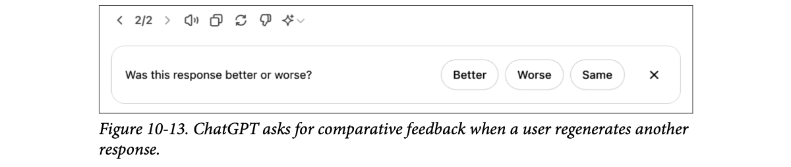
How to read this figure. The "2/2" at the top left shows this is the second (regenerated) response. Below, a small bar asks whether it was Better, Worse, or Same compared with the first, with an X to dismiss. One click turns a regeneration into a labelled comparison pair, and it's easy to ignore.
Actions to organise conversations (delete, rename, share, bookmark) are signals. Deleting is a pretty strong sign the conversation was bad, unless it was embarrassing and the user wants to remove the trace. Renaming suggests the conversation was good but the auto-generated title was bad.
Turns per conversation is commonly tracked, but whether it's good or bad depends on the app. For AI companions, a long conversation may mean the user enjoys it. For productivity bots like customer support, a long conversation may mean the bot is inefficient at resolving issues.
Read length together with dialogue diversity, measured by distinct token or topic count. A long conversation where the bot keeps repeating a few lines suggests the user is stuck in a loop.
More signals clarify intent. If a user rephrases their question after sharing a link, the conversation probably didn't meet expectations. Extracting, interpreting and using implicit signals from conversations is a small but growing research area. (Footnote 8: you can also use AI to analyse feedback, not just collect it about AI apps.)
At a sari shop, a customer asking to see "one more" sari isn't necessarily unhappy; she's comparing. But if she asks for "one more" twenty times and keeps getting the same three designs, she's stuck, and if she's paying per sari shown (usage billing), each "one more" means much more.
Where it breaks: the shopkeeper can ask "what are you looking for?"; most apps can't, without adding friction.
An action's meaning depends on context: app type, billing model, the user's habits, and what came before and after. One signal alone is ambiguous; combining signals (length + diversity, share + rephrase) narrows down the intent. That's why implicit signals need validation per product.
"Is a long conversation a good sign?" Say: "It depends on the product: good for a companion app, bad for customer support where it means slow resolution. I'd combine it with dialogue diversity to detect loops, and with corrections or rephrases. Explicit feedback is clear but sparse and biased toward complainers; implicit is plentiful but noisy, so I combine both."
If the last section gave you ideas on what feedback to collect, this one covers when and how.
Feedback can and should be collected throughout the user journey. Users should be able to give feedback, especially to report errors, whenever they need to. But the option must be nonintrusive: it shouldn't interfere with the user's workflow. Places where feedback is especially valuable:
Right after sign-up, feedback can calibrate the app for the user. A face ID app must scan your face first. A voice assistant may ask you to read a sentence aloud so it recognises your voice for wake words (words that activate it, like "Hey Google"). A language-learning app may ask a few questions to gauge your level. For some apps (face ID) calibration is necessary. For others, initial feedback should be optional, because it creates friction for people trying the product. If the user doesn't state a preference, fall back to a neutral option and calibrate over time.
When the model hallucinates, blocks a legitimate request, generates a compromising image, or takes too long, users should be able to tell you. Options: downvote a response, regenerate with the same model, or switch to another model. Users may also just say "You're wrong", "Too cliche", or "I want something shorter".
Ideally, even when your product makes mistakes, users can still finish their task. If the model mis-categorises a product, let users edit the category. Let users collaborate with the AI; if that doesn't work, let them collaborate with humans. Many support bots offer a transfer to a human agent if the conversation drags on or the user seems frustrated.
A good example of human–AI collaboration is inpainting for image generation: if a generated image isn't quite right, the user selects a region and describes with a prompt how to improve it. This gets users better results and gives developers high-quality feedback.
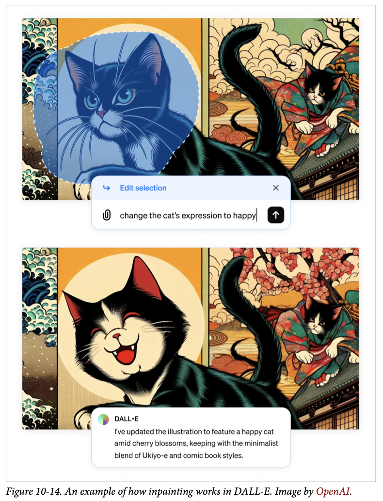
How to read this figure. Top: an ukiyo-e style picture of a cat; the user has selected the cat's face (the highlighted blob) and typed the edit "change the cat's expression to happy". Bottom: only that region changed: the cat now grins, and the rest of the scene is kept. The selection tells the developer exactly which part was wrong and the prompt says how, far richer than a thumbs-down.
Footnote 9: Huyen wishes there were inpainting for text-to-speech. TTS works well about 95% of the time, but the other 5% (mispronounced names, missing pauses in dialogue) is frustrating, and she'd like to fix just the mistakes instead of regenerating the whole audio.
A tailor's trial fitting. At the start he takes measurements (calibration), but doesn't make you fill a 20-question form before you can even try a shirt. When the sleeve is too long, you don't say "bad shirt"; you pinch the exact spot (inpainting). He fixes that spot and learns your arm length.
Where it breaks: the tailor is one person who remembers you; an app must store that calibration and connect it to future outputs deliberately.
The most valuable feedback is attached to a task the user is already doing: editing a category, selecting a region, switching a model. The user's goal and the developer's data goal line up, so the feedback is both abundant and precise.
"Where in the UX would you collect feedback?" Say: "At onboarding only if calibration is necessary, otherwise optional with a neutral default. At failures, give recovery actions (downvote, regenerate, switch model, edit, hand off to a human) that double as feedback. Best are collaborative fixes like inpainting, where the user finishes the task and we learn exactly what was wrong." The book's own wish for TTS inpainting is a good hook for voice products.
When the model is unsure about an action, ask the user to increase its confidence. Example: asked to summarise a paper, the model isn't sure whether the user wants a short high-level summary or a detailed section-by-section one. It can show both side by side (assuming generating two doesn't add latency) and let the user choose. Such comparative signals can be used for preference finetuning.
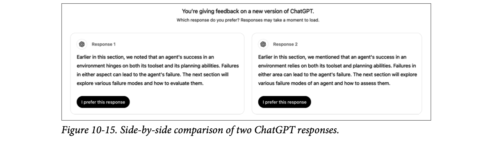
How to read this figure. ChatGPT says you're giving feedback on a new version and asks which response you prefer. Response 1 and Response 2 are almost word-for-word the same (a paragraph about an agent's success depending on its tools and planning), each with an "I prefer this response" button. Notice how hard it is to choose: when the two options barely differ, votes become noise.
Showing two full responses means asking for explicit feedback. Users may not have time to read both or care enough to vote thoughtfully, giving noisy votes. Some apps, like Google Gemini, show only the beginning of each response; the user clicks to expand the one they want to read. It's unclear whether full or partial side-by-side gives more reliable feedback.
Footnote 10: when Huyen asks this at events, answers conflict. Some say full responses give more reliable feedback because users have more information. Others say once users have read the full responses, they have no incentive to click the better one.
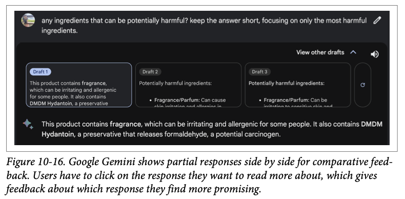
How to read this figure. The user asked about potentially harmful ingredients. Under "View other drafts", three cards show only the first lines of Draft 1, 2 and 3. Draft 1 is selected and shown in full below. The click that expands a draft is itself the feedback: "this beginning looked most promising".
Another example: a photo organisation app tags your photos so it can answer "Show me all photos of X". When unsure whether two people are the same, it can ask you, as Google Photos does.
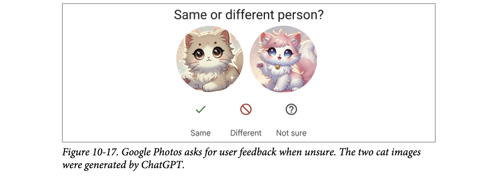
How to read this figure. "Same or different person?" with two faces (here, ChatGPT-generated cartoon cats standing in for real people) and three answers: Same (tick), Different (no-entry sign), Not sure (question mark). The "Not sure" option matters: it lets users avoid guessing, which keeps the labels clean (see plate 26).
Users can show satisfaction with thumbs up, favouriting, or sharing. But Apple's human interface guidelines warn against asking for both positive and negative feedback: your app should produce good results by default, and asking about good results may suggest good results are the exception. Ultimately, if users are happy, they keep using your app.
Still, many people Huyen talked to think users should be able to give feedback on something amazing. A product manager for a popular AI product said their team needs positive feedback because it reveals the features users love enough to be enthusiastic about, so they can focus on a small set of high-impact features rather than spreading effort thin.
Some avoid asking for positive feedback because it may clutter the UI or annoy users. You can manage this by limiting how often you ask. With a large user base, asking only 1% of users at a time can gather enough feedback without disturbing most people. But the smaller the share you ask, the greater the risk of feedback bias. With a large enough pool, the feedback can still give meaningful product insight.
Modelled: responses/day = DAU × % asked × response rate. The ±margin is a rough 95% margin of error for a satisfaction percentage near 50%, assuming random sampling (≈ 1/√n); real feedback is not random (self-selection), which is the bias the book warns about.
An exam paper with an ambiguous question: a good teacher writes both possible readings on the board and asks the class which one they meant, rather than guessing. And a restaurant owner who asks "Was everything okay?" at every table annoys diners; one who asks one table in a hundred learns enough.
Where it breaks: the tables that answer are not random; happy regulars and angry first-timers speak up more.
Uncertainty is when a label is most valuable: the model is near its decision boundary, so a human answer teaches it the most (the idea behind active learning). Positive feedback is valuable for a different reason: it reveals which features drive delight. Rate-limiting requests balances data volume against user annoyance and bias.
"Should we ask for thumbs-up as well as thumbs-down?" Say: "There's a real debate. Apple's HIG says don't ask about good results, since good should be the default. But PMs value positive feedback to find high-impact features. A compromise: ask a small random slice, like 1% of users, which is plenty at scale; just remember smaller samples mean more bias. And ask hardest when the model is unsure, e.g., show two options side by side."
Feedback should integrate seamlessly into the user's workflow: easy to give without extra work, not disruptive, easy to ignore, and with incentives to give good feedback.
A widely cited good design is Midjourney. For each prompt it generates a set of four images and offers:
Each option sends a different signal. Options 1 and 2 tell Midjourney which of the four images the user finds most promising. Option 1 gives the strongest positive signal about the chosen image; option 2 a weaker positive signal. Option 3 says none is good enough, though users may regenerate even when the images are good, just to see what else is possible.
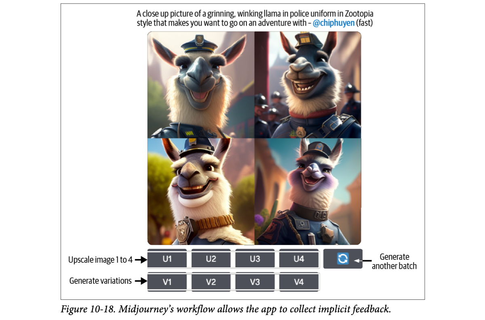
How to read this figure. The prompt (a grinning, winking llama in police uniform, Zootopia style) produced a 2×2 grid. Row U1–U4 upscales image 1–4; row V1–V4 makes variations of image 1–4; the circular-arrow button on the right generates another batch. Every button the user presses to get their work done also labels the images.
Signal weights are modelled (upscale +3, variation +1, regenerate −1 for all four), to show "strong vs weak" signals; the book gives the ordering, not numbers.
Code assistants like GitHub Copilot may show drafts in lighter colours than the final text. Users press Tab to accept or just keep typing to ignore, and both are feedback.
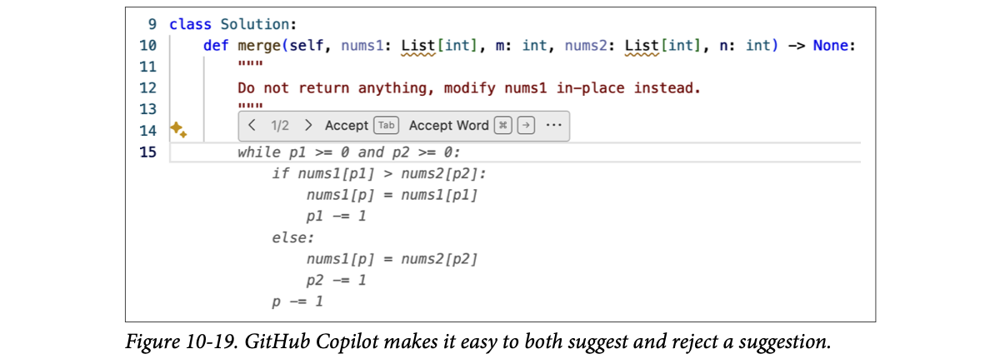
How to read this figure. The developer's own code (a merge method with a docstring) is in normal colours. Copilot's suggestion (a while p1 >= 0 and p2 >= 0 loop) is in faded grey italics. The small toolbar shows "1/2" (first of two suggestions), "Accept (Tab)" and "Accept Word". Accepting costs one key; rejecting costs nothing (keep typing). Both outcomes are logged signals.
Standalone apps like ChatGPT and Claude have a big disadvantage: they aren't integrated into the user's daily workflow, so it's hard to collect high-quality feedback the way integrated products like Copilot can. If Gmail suggests an email draft, Gmail can track how the draft is used or edited. If you write an email with ChatGPT, ChatGPT doesn't know whether it was actually sent.
Context around feedback. Feedback alone is useful for product analytics: thumbs up/down alone tells you how often people are happy or unhappy. For deeper analysis you need context, such as the previous 5 to 10 dialogue turns, to see what went wrong. But getting that context may need explicit user consent, especially if it might contain personally identifiable information.
So some products include terms in their service agreements allowing them to access user data for analytics and product improvement. Apps without such terms may tie feedback to a user data donation flow: when submitting feedback, users are asked to share their recent interaction data along with it, e.g., by ticking a box.
Explain how feedback is used: it motivates users to give more and better feedback. Is it used to personalise the product for this user, to collect general usage statistics, or to train a new model? If users worry about privacy, reassure them that their data won't be used to train models or won't leave their device, only if those are true.
A paan-wala who hands you a sample: you either take the full paan (accept) or walk on (ignore). He learns your taste without asking a single question. Compare a shop that makes you fill a feedback slip: fewer answers, and only from the very happy or very angry.
Where it breaks: the paan-wala sees whether you actually ate it; ChatGPT can't see whether your drafted email was sent, which is exactly the standalone-app problem.
When the action the user wants to take is the feedback (upscale, Tab, edit), feedback costs zero extra effort, so you get it at scale and with less bias toward extremes. The further the AI sits from where the outcome happens (sent email, merged code), the less you can observe, and the more you must rely on explicit, consented feedback with context.
"Design a feedback system for our AI writing feature." Say: "Embed it in the workflow: accept/ignore/edit on suggestions, like Copilot's Tab, and log edits as preference pairs. For deeper analysis, attach the last 5–10 turns, but only with consent or terms that allow it, or a data-donation checkbox. Tell users exactly how feedback is used, and only promise privacy you actually provide."
Don't ask users to do the impossible. If you collect comparative signals, don't make users choose between two options they don't understand. Huyen was once stumped when ChatGPT asked her to choose between two answers to a statistics question; she wished there were an "I don't know" option.
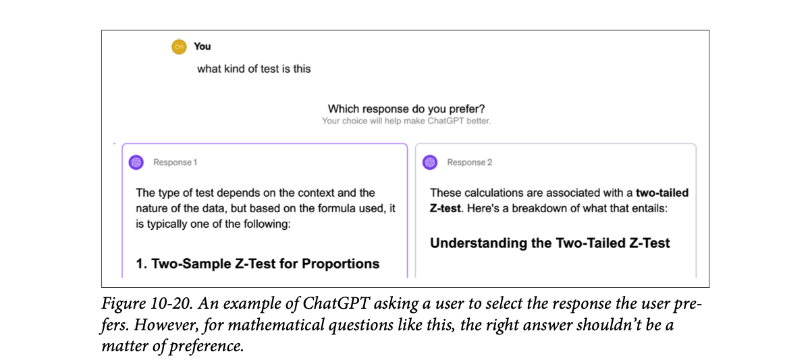
How to read this figure. The user asked "what kind of test is this". Response 1 hedges and lists options starting with a two-sample Z-test for proportions; Response 2 says it's a two-tailed Z-test. The UI asks "Which response do you prefer?". But correctness isn't a preference, and a user who didn't know the answer (that's why they asked) can only guess, so the vote is noise. Compare Figure 10-17's "Not sure" button.
Avoid confusing designs. Add icons and tooltips if they help people understand an option. Ambiguous instructions produce noisy feedback. Huyen once hosted a GPU optimisation workshop and used Luma to collect feedback. Reading the negative feedback confused her: the comments were positive, but the star ratings were 1/5. Digging in, she found Luma used emojis for the numbers, and the angry emoji (one star) sat where the five-star rating should have been.
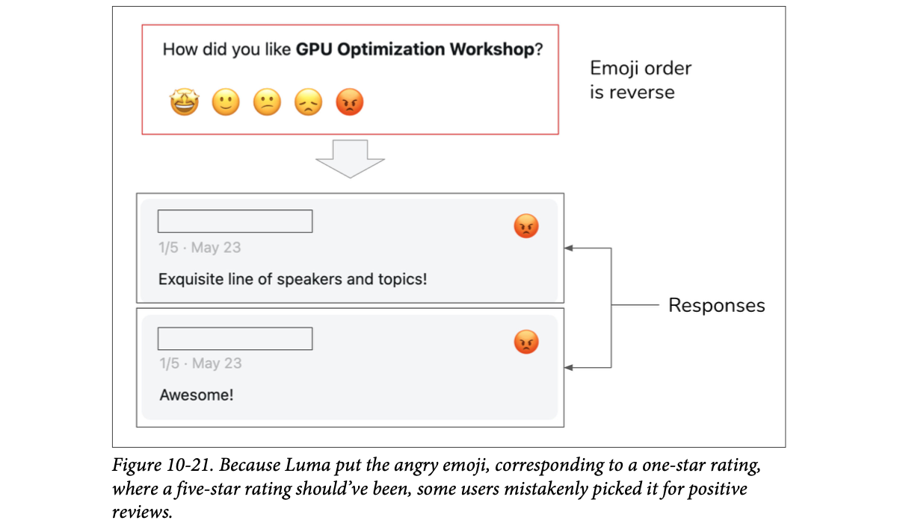
How to read this figure. Top: the form shows five emojis, star-struck on the left down to angry on the right, annotated "Emoji order is reverse" (relative to the star values). Bottom: two real responses stored as 1/5 with the angry emoji, while their text says "Exquisite line of speakers and topics!" and "Awesome!". Users read the last position as "best", like the fifth star, and picked the angry face.
Private or public? Decide whether users' feedback should be visible to others. If a user likes something, should other users see that? In its early days, Midjourney's feedback (upscale, variations, regenerate) was public.
Visibility strongly affects user behaviour, user experience, and feedback quality. Users are more candid in private (less chance of being judged), which can mean higher-quality signals. (Footnote 11: e.g., news stories about a US senator blaming a staffer for "liking" a porn tweet (POLITICO, 2017), and a Kentucky senator whose account "liked" obscene tweets saying he was hacked (WKU Public Radio, 2023).) In 2024, X (formerly Twitter) made "likes" private, and its owner Elon Musk claimed a significant uptick in likes afterwards.
But private signals can reduce discoverability and explainability. Hidden likes stop users from finding tweets their connections liked. If X recommends tweets based on likes from people you follow, hiding likes may confuse users about why certain tweets appear in their feeds.
Voting in an election by secret ballot vs by raised hands in a village meeting. Secret ballots get honest votes; raised hands get social pressure, but everyone can see who supports whom.
Where it breaks: an election only needs the count; a recommender also needs to explain itself, which secrecy makes harder.
Feedback is a measurement instrument. A badly labelled scale (reversed emojis), an impossible question (math as preference), or social visibility all add systematic error to the measurement. No amount of data volume fixes systematic error; only better design does.
"Your thumbs-down rate jumped after a UI change. What do you check?" Say: "First, whether the measurement changed, not the model: button order, icons, labels, defaults. The Luma case had positive comments with 1-star ratings because the emoji order was reversed. Also offer 'I don't know' for comparisons users can't judge, and decide deliberately whether feedback is private (more candid) or public (more explainable)."
User feedback is clearly valuable, but it isn't a free lunch; it has limitations. Like any data, it has biases. Understand them and design your feedback system around them. Each app has its own; here are examples to watch for.
The tendency to rate things more positively than deserved, often to avoid conflict, because people feel they should be nice, or because it's the easiest option. Imagine you're in a hurry and an app asks you to rate a transaction. You're not happy, but a negative rating will prompt you for reasons, so you pick positive to be done. That's also why you shouldn't make people do extra work for your feedback.
On a five-star scale, 4 and 5 stars are meant to mean "good". But users often feel pressured to give 5, keeping 4 for when something went wrong. According to Uber, in 2015 the average driver rating was 4.8, and drivers below 4.6 risked deactivation. The bias isn't necessarily a dealbreaker: Uber's goal is to separate good from bad drivers, and the system still seems to do that. Look at the distribution of your ratings to detect the bias.
For more granular feedback, remove the strong negative connotation of low ratings. Instead of numbers 1 to 5, offer options like: "Great ride. Great driver." · "Pretty good." · "Nothing to complain about but nothing stellar either." · "Could've been better." · "Don't match me with this driver again." (Footnote 12: these options only show how options can be rewritten; they haven't been validated.)
Users often give random feedback, not from malice but from lack of motivation to think. Shown two long responses side by side, they may not read both and click one at random. On Midjourney, users may pick a random image to make variations of.
The position where an option appears changes how it's perceived. Users are generally more likely to click the first suggestion than the second. A click on the first doesn't necessarily mean it's good. Mitigate by randomly varying positions, or by building a model that estimates a suggestion's true success rate given its position.
Many other biases affect feedback, some covered earlier in the book. People may prefer the longer response side by side even if it's less accurate, because length is easier to notice than inaccuracy. Recency bias: people favour the answer they saw last.
Inspect your feedback to uncover its biases. Understanding them helps you interpret feedback correctly and avoid misleading product decisions.
Modelled: 1,000 users compare A (always shown first unless randomised) and B. A random clicker picks either position 50/50; the rest pick the better-looking one, with a fixed bonus for whatever is in first position.
Swiggy/Zomato style 5-star ratings: almost every restaurant is 4.2–4.6, because people feel bad giving 3 (leniency). The first restaurant in the list gets ordered from more just for being first (position). A long, glossy menu description wins over a short accurate one (length/preference bias).
Where it breaks: food apps can see repeat orders as a cleaner signal; many AI apps have no equivalent outcome to check against.
Every feedback number = true quality + systematic bias + random noise. Random noise averages out with more data; systematic bias (position, length, leniency) does not, it just becomes a very confident wrong answer. Randomising positions turns a systematic bias into noise, which then averages away.
"Users prefer model B in A/B side-by-side tests. Ship it?" Say: "First rule out feedback biases: was B always shown first or last (position, recency)? Is B just longer (length beats accuracy in votes)? Are votes random because responses are long? Randomise positions, control for length, check rating distributions for leniency, and confirm with an independent quality metric."
User feedback is incomplete: you only get feedback on what you show users.
When feedback is used to change a model's behaviour, degenerate feedback loops can arise: the model's predictions influence the feedback, which influences the next version of the model, which amplifies the initial biases.
Example: video recommendations. Higher-ranked videos are shown first, so they get more clicks, which convinces the system they're the best. At first videos A and B differ only slightly, but A ranked a bit higher, got more clicks, and kept getting boosted. Over time A soars and B is left behind. This is why popular videos stay popular and new ones struggle to break through. The problem is known as "exposure bias," "popularity bias," or "filter bubbles", and is well studied.
Modelled: both videos have the same true appeal. Each round, the higher-scored video is shown first and gets 70% of clicks (position effect); scores are updated from clicks. Exploration shows B first in that % of rounds.
A degenerate loop can also change your product's focus and user base. Suppose a few early users say they like cat photos. The system generates more cats, which attracts cat lovers, who give more feedback that cats are good, and so on, until your app becomes a cat haven. Cats are a harmless example, but the same mechanism can amplify racism, sexism, and preference for explicit content.
Acting on feedback can even turn a conversational agent into, in Huyen's words, "a liar". Multiple studies show that training on user feedback can teach a model to give users what it thinks they want, even if that isn't the most accurate or beneficial (Stray, 2023). Sharma et al. (2023) show models trained on human feedback tend toward sycophancy: they're more likely to give responses that match the user's own view.
User feedback is crucial for a good experience, but used indiscriminately it can perpetuate biases and destroy your product. Before incorporating feedback, understand its limitations and potential impact.
A TV news channel that sees outrage segments get the most views makes more outrage, which attracts viewers who like outrage, whose viewing data says "more outrage". A few years later, it's a different channel with a different audience, and nobody decided that on purpose.
Where it breaks: a channel's editors can step back and choose; an automated retraining loop has no editor unless you build one in (exploration, held-out evaluation, human review).
Feedback is collected on a distribution the model itself chose. Training on it narrows that distribution further, so the model never sees evidence about the options it stopped showing. Breaking the loop needs exploration (sometimes show what the model doesn't prefer), evaluation on data the model didn't select, and checks for accuracy, not just approval, against sycophancy.
"What can go wrong if we retrain on thumbs-up data?" Say: "Degenerate feedback loops: you only get feedback on what you showed, so early small preferences get amplified (popularity bias, filter bubbles, the 'cat haven' drift of the user base). And models trained to win approval become sycophantic, agreeing with users rather than being accurate (Sharma et al., 2023). Mitigate with exploration, randomisation, independent accuracy evals, and human review before feedback goes into training."
Preference finetuning and its risks: Ch.7, LLM Engineer's Handbook Ch.6. Data flywheel: plate 18, Ch.8.
Earlier chapters each focused on one part of AI engineering; this one looked at building an application on foundation models as a whole. It had two parts.
| Term | Meaning in one line |
|---|---|
| Context construction | Gathering the information a model needs (retrieval, tools); "feature engineering for foundation models". |
| Read-only vs write actions | Read-only actions gather info (search, SQL); write actions change the world (send email, place order). |
| Guardrails (input / output) | Checks before the model (PII leaks, bad prompts) and after it (quality and security failures, with a handling policy). |
| PII masking / reverse PII map | Replace sensitive values with placeholders before sending out; map them back in the response. |
| False refusal rate | How often the system wrongly blocks legitimate requests. |
| Stream completion mode | Showing tokens as they're generated; lowers waiting but makes output guardrails harder. |
| Router / intent classifier | Small, fast model that predicts what the user wants and sends the query to the right solution. |
| Next-action predictor | A router that chooses an agent's next tool or memory source. |
| Model gateway | Unified, secure interface to many models: keys, access control, cost limits, fallbacks, logging. |
| Exact caching | Reuse a stored result only for an identical request. |
| Semantic caching | Reuse a stored result for a similar request (embedding similarity above a threshold). |
| Eviction policy (LRU/LFU/FIFO) | Rule for which cache entry to drop when full. |
| MTTD / MTTR / CFR | Mean time to detection / to response; change failure rate. |
| Monitoring vs observability | Tracking outputs vs instrumenting so internal state can be inferred without new code. |
| Metrics / logs / traces | Aggregated numbers / append-only event records / one request's linked execution path. |
| TTFT / TPOT | Time to first token / time per output token. |
| North star metric | The business metric you ultimately care about (DAU, session duration, subscriptions). |
| Drift | Unnoticed change in system prompt, user behaviour, or the model behind an API. |
| Orchestrator / chaining | Tool that defines components and composes them into a pipeline. |
| Data flywheel | Usage → feedback data → better model → more usage. |
| Explicit / implicit feedback | Asked-for ratings vs signals inferred from actions. |
| Natural language feedback | Feedback inside message content: corrections, complaints, sentiment. |
| Preference data | (query, winning response, losing response) triples; user edits and comparisons produce them. |
| Dialogue diversity | Distinct tokens or topics in a conversation; low diversity in a long chat suggests a loop. |
| Leniency / position / preference / recency bias | Rating too kindly / favouring the first option / favouring longer answers / favouring the last-seen answer. |
| Degenerate feedback loop | Predictions shape feedback, which shapes the next model, amplifying initial bias (exposure / popularity bias, filter bubbles). |
| Sycophancy | Model tendency, from training on human feedback, to agree with the user's view rather than be accurate. |
| Name | What the chapter says it does |
|---|---|
| OpenAI, Google (Gemini), Anthropic (Claude) | Model API providers; support file uploads and tool use for context construction; ship built-in guardrails. |
| Meta Purple Llama, NVIDIA NeMo Guardrails, Azure PyRIT, Azure AI content filters, Perspective API, OpenAI moderation API | Out-of-the-box guardrail solutions. |
| GPT-2, BERT, Llama 7B | Smaller models teams adapt as intent classifiers for routing. |
| Portkey AI Gateway, MLflow AI Gateway, Wealthsimple LLM Gateway, TrueFoundry, Kong, Cloudflare | Off-the-shelf model gateways. |
| PostgreSQL, Redis | Storage for exact caches beyond in-memory. |
| Datadog, Splunk, Dynatrace, New Relic | Large observability companies (combined value near $100B at writing). |
| LangSmith | Visualises request traces (Fig 10-11). |
| LangChain, LlamaIndex, Flowise, Langflow, Haystack | AI pipeline orchestration tools. |
| Airflow, Metaflow | General workflow orchestrators, different from AI pipeline orchestrators. |
| Voiceflow | Reported a 10% drop moving from GPT-3.5-turbo-0301 to -1106. |
| ChatGPT | Better/worse after regenerate (Fig 10-13); side-by-side preference (10-15, 10-20). |
| Google Gemini, Google Photos | Partial drafts side by side (10-16); "same or different person?" when unsure (10-17). |
| DALL-E | Inpainting as human–AI collaboration and feedback (10-14). |
| Midjourney | Upscale / variations / regenerate as implicit feedback (10-18); feedback once public. |
| GitHub Copilot, Gmail | Integrated suggestions where accept/ignore/edit is observable (10-19). |
| Luma | Reversed emoji scale gave misleading 1/5 ratings (10-21). |
| Amazon Alexa, Spotify voice control, Yahoo! Voice | Early conversational AI that studied natural-language feedback. |
| Uber | Leniency bias: 4.8 average driver rating in 2015; below 4.6 risked deactivation. |
| X (Twitter) | Made likes private in 2024; claimed more likes, at a cost to discoverability. |
| Apple Human Interface Guidelines | Warns against asking for both positive and negative feedback. |
| Samsung | Employee leaked proprietary information via ChatGPT (input-guardrail motivation). |
Enhance context; put in guardrails; add a model router and gateway; optimise latency and cost with caching; add complex logic (agent patterns) and write actions. Then monitoring/observability and orchestration.
Because it assembles the information the model uses to produce its output, just as features are the inputs a classic ML model uses; output quality depends heavily on it.
Block the whole query, or mask the sensitive part with a placeholder like [PHONE NUMBER] and unmask it in the response using a reverse PII map.
One retry after a failure roughly doubles it. Send the query twice in parallel and pick the better response: same latency, more API calls.
Partial responses are hard to evaluate, so unsafe tokens can reach the user before the guardrail decides to block.
Truncate the context to fit the intended model, or route to a model with a larger context limit.
Centralised access control (no shared vendor keys) with fine-grained per-user/app permissions; usage monitoring and limits for cost; fallback on rate limits or failures (alternative models, retry after waiting); a place for load balancing, logging, analytics, and sometimes caching and guardrails.
User X's personalised answer would be cached and served to user Y, leaking X's information.
It depends on good embeddings, working vector search and a reliable similarity metric; the threshold is hard to set; wrong matches return wrong answers; and the vector search adds compute and latency that grows with cache size. Only worth it with a high hit rate, after evaluation.
Mean time to detection, mean time to response (resolution after detection), change failure rate (share of deployments needing a fix or rollback). A high CFR suggests rethinking the evaluation pipeline so bad changes are caught before deployment.
Metrics say something's wrong; read logs from around that time to see what happened; correlate log errors with metrics to confirm; open traces of affected requests to find the failing step (processing, retrieval, or generation). Logs must be available quickly; 15-minute-delayed logs slow you down.
System prompt changes, user behaviour changes, underlying model changes. Example: Voiceflow's 10% drop from GPT-3.5-turbo-0301 to -1106 (or Chen et al.'s March vs June 2023 GPT-4/3.5 differences).
(query, edited response = winner, original response = loser).
Not necessarily: position bias. Randomise positions or model the success rate given position; also check length and recency biases.
Degenerate feedback loops (you only see feedback on what you showed; small initial biases get amplified, even changing your user base) and sycophancy (models trained on human feedback learn to agree with users rather than be accurate). Use exploration, independent evals and review.